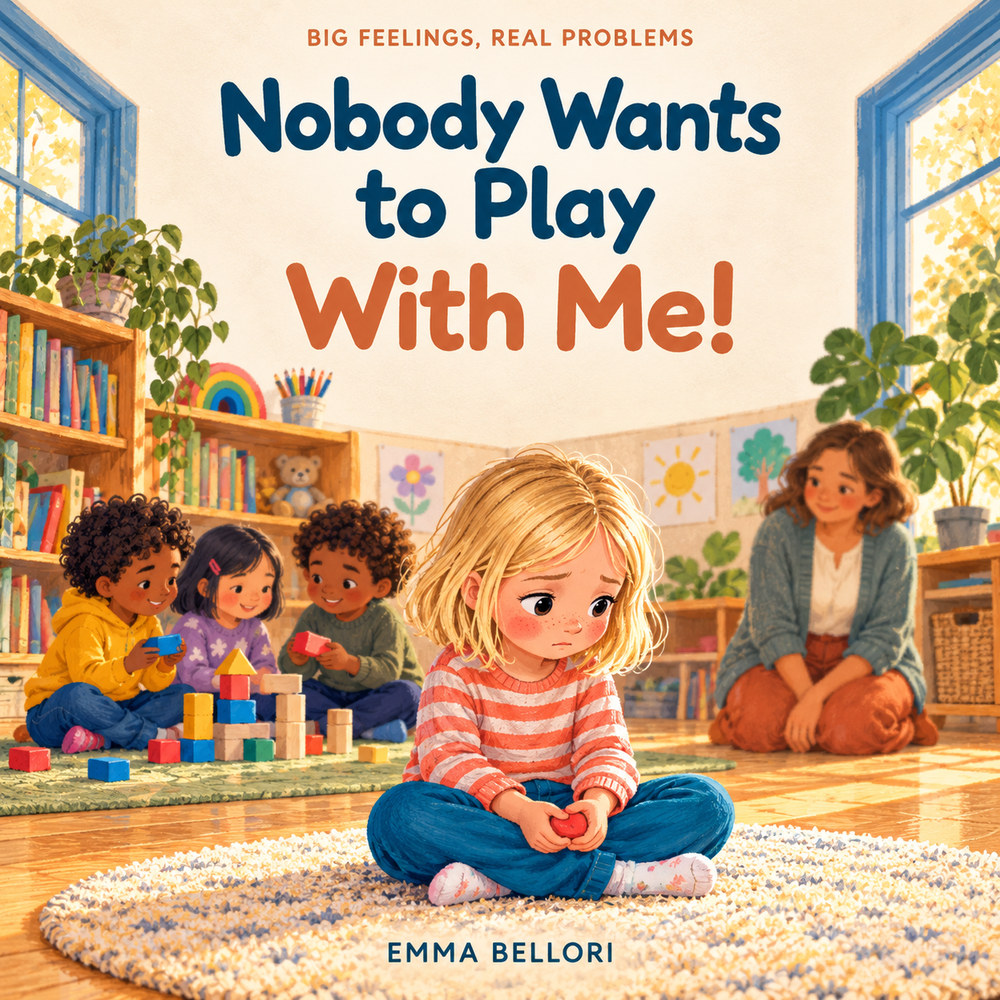
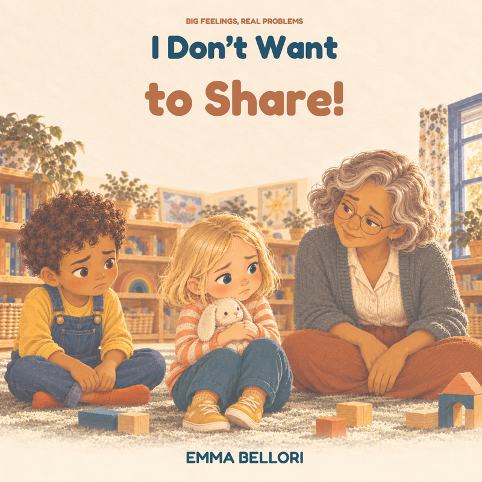

BIG FEELINGS, REAL PROBLEMS
I Don’t Want to Share!
Sharing, taking turns and friendship
A gentle story for children learning to share, take turns and navigate the big feelings that can arise during play.
View on Amazon ↗Amazon.com displays current prices, available editions and any interior preview offered for this title.